Design phase · v4 · draft 03 · realism pass
Draft 03 is the realism pass. The samurai now wears black lacquered armour laced in white silk, with a menpō under his kasa. The world gets fog lying on the water, drifting dust, moonlight shafts, depth of field, rippled reflections and soft shadows. The background kanji are gone. Every frame is a real-time three.js render. The body is a stock rigged mannequin and the armour is built in code, so the final hand-sculpted model will go further still.
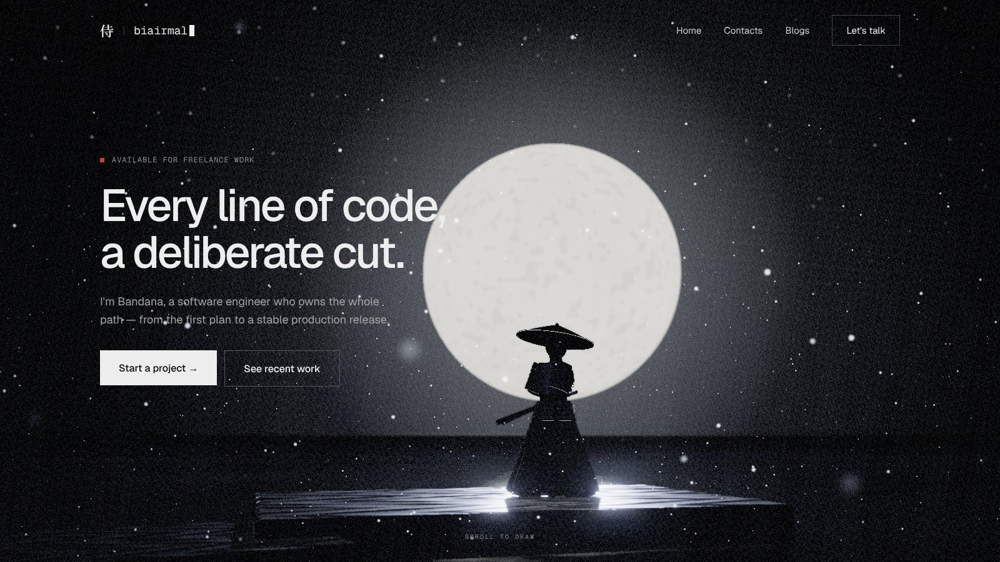
Shot 01 · real-time previz render · mannequin body with procedural armour
改What changed since draft 02 (your feedback)
流The scroll, as a film
The percentages are the share of the home page's scroll. Hatched blocks are pinned: the page stops moving while the camera keeps going.
地The world
Everything sits in a single scene on still black water under one moon, with mist lying on the surface. Each section has a set, and the camera travels between sets. Sets that are far from the camera are hidden and loaded on demand, so the cost stays at roughly one set at a time.
侍The character
| Clip | Used in | Length | Notes |
|---|---|---|---|
| Iai stance (idle) | 01, 03 | loop 6s | Breathing and the wind in the hakama. The left thumb rests on the tsuba. |
| Koiguchi o kiru | 02A | 0.4s | The thumb pushes the tsuba and about 20cm of blade shows. Scroll-scrubbed. |
| Nukitsuke (draw + rising cut) | 02B | 0.9s | Low-left to high-right in one stroke, front foot steps forward. Scroll-scrubbed, reversible. |
| Chiburi + nōtō | 03 | 2.2s | Flicks the blade clean, then sheathes it slowly. Plays on its own once the cut finishes. |
| Walk | 04, 05 | loop | Slow and deliberate. He walks ahead of the camera on the path, as a guide. |
| Turn to camera | 09 | 1.6s | The first time he faces the viewer. |
| Hand to hilt | 09 hover | 0.5s | Interactive: plays when the email link is hovered, and reverses on leave. |
| Bow (rei) | footer | 1.8s | Plays once when the footer comes into view, as the ending. |
絵Shots
Each frame is the hold pose of its shot. The camera notes describe the move into and out of it.
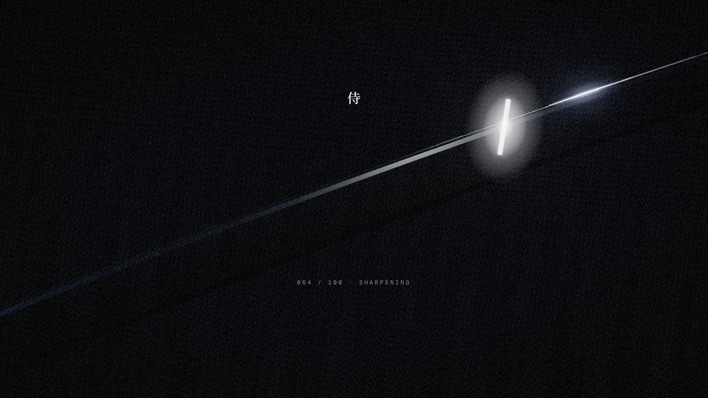
Black screen. A blade crosses the frame in macro, and a single glint slides along its edge as the assets load. The counter reads 064 / 100 · sharpening.
At 100 the glint reaches the tip and flares. The frame cuts on that flash to 01, which is already rendering behind it, so the loader feels like the first shot of the film and not a wait.
At most 1.6s, or 0.4s when the assets are cached. Skipped for returning visitors and for reduced motion. The hero HTML is in the DOM from the start for SEO.
A low angle from the water's edge. He stands on a stone slab, in silhouette against a huge full moon that is mirrored in still black water. The seams catch the light: the kasa rim and the shoulder wings.
Idle stance loop. The hakama moves in the wind, slow ripples cross the reflection, and the camera creeps in about 4% over 10s. The headline reveals line by line through a diagonal slash mask.
The camera orbits ±4° toward the cursor. When the cursor nears him, he turns his head slightly (a 0.6s look-at), and nothing else. It should feel like he has noticed you.
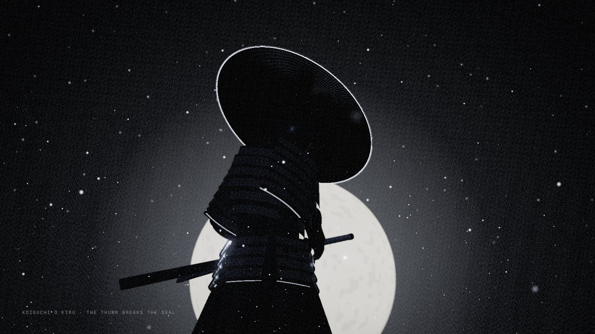
02A · Koiguchi: the seal breaks
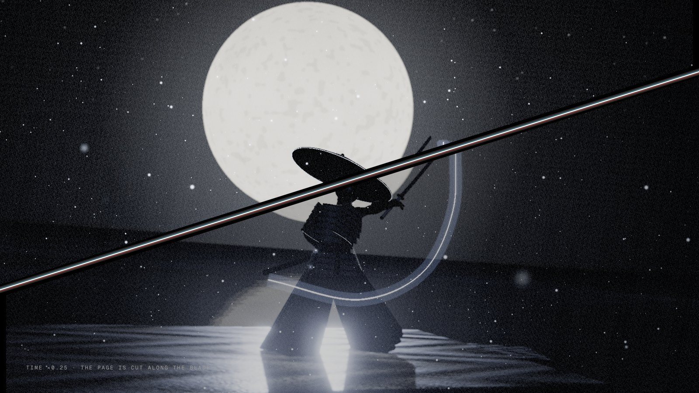
02B · The page is cut along the blade
The first scroll pulls the camera down and in to a heroic low angle. His thumb pushes the tsuba. The koiguchi seam flares and 20cm of steel shows. The longer you hold here, the more tension builds: wind and sound drop out.
The nukitsuke is scrubbed by scroll. Time drops to ×0.25 at the moment of the cut, and the blade leaves a short trail of light. On contact the whole viewport is sliced along the cut's diagonal: canvas and HTML split and slide apart, with an RGB-split flash on the edge.
About 0.9s of real time, so it never drags. Scrolling back up reverses it exactly: the halves rejoin and the blade returns to the saya. This is the only place on the site with chromatic aberration.
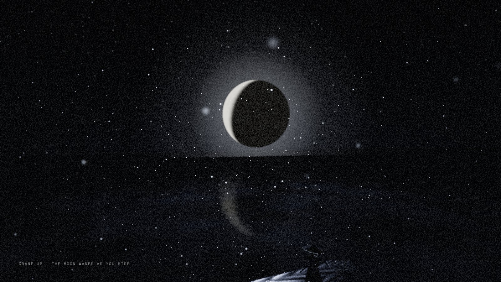
He flicks the blade (chiburi) and sheathes it slowly (nōtō). The camera cranes up and away until he is a small figure at the bottom of the frame and the sky takes over.
The moon is a lit sphere, so it wanes physically: the light rotates around it and the crescent forms in front of you. Its reflection in the water wanes with it.
This replaces today's empty spacer section. It is the breath after the strike, and it carries the camera, from high up, to the next set.
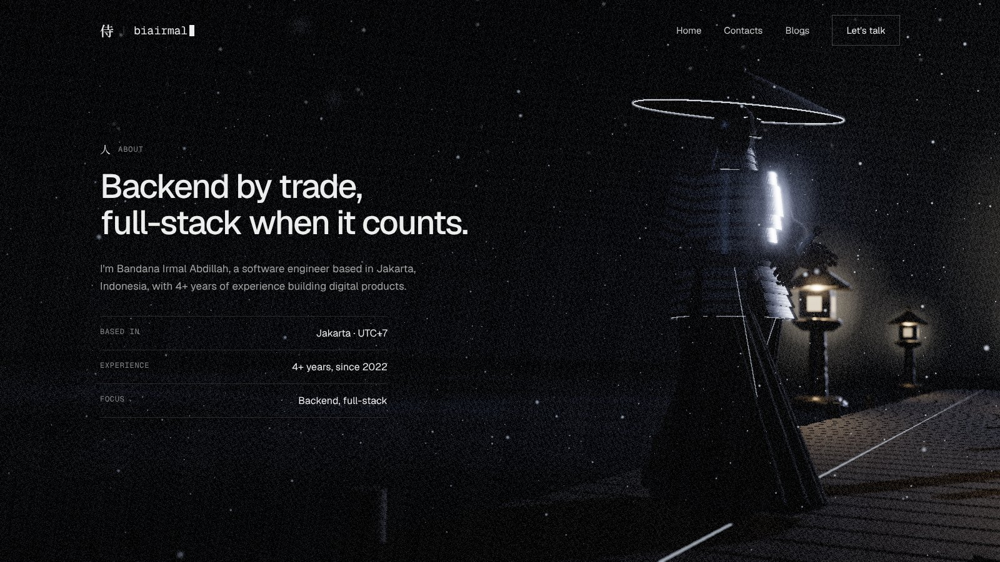
The camera comes down out of the sky to the head of the walkway. He stands in three-quarter view, in mist to the knee, with the first lanterns glowing behind him. This is the quiet portrait of the person behind the work: the closest we get to him on the site.
A slow arc of about 15° around him while you read. His head turns a little toward the camera, and the mist drifts across the boards. The fact rows draw their rules left to right and the years count up.
The real model will hold up in this shot: lacquer, lacing and cloth at medium distance. A true face close-up waits for the final sculpt, so the previz avoids it.
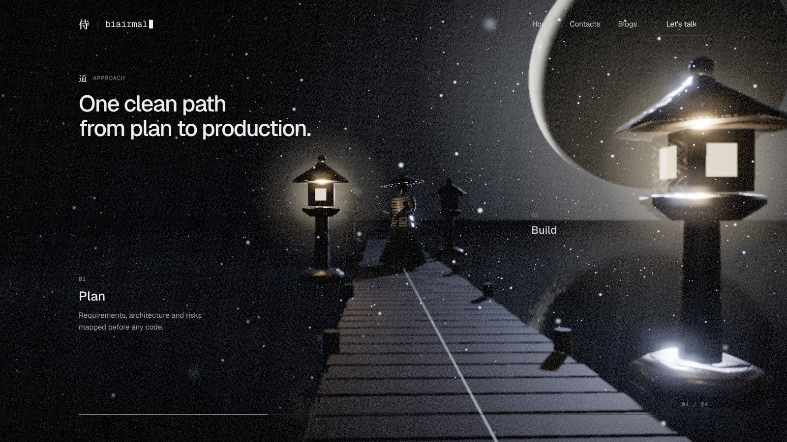
A wooden walkway runs out over the water with a light seam down its centre. Four stone lanterns (tōrō) stand along it, one per stage: Plan, Build, Ship, Sustain. Mist lies on the water and the crescent hangs above the far end.
The section pins and scroll walks the camera down the path. He walks ahead of the camera, as a guide. Each lantern lights as you pass it: its card comes forward and the previous card settles back. A progress hairline runs along the bottom with a 01 / 04 counter.
Not pinned. The camera holds a fixed three-quarter view and the lanterns light up as their cards cross the middle of the screen.
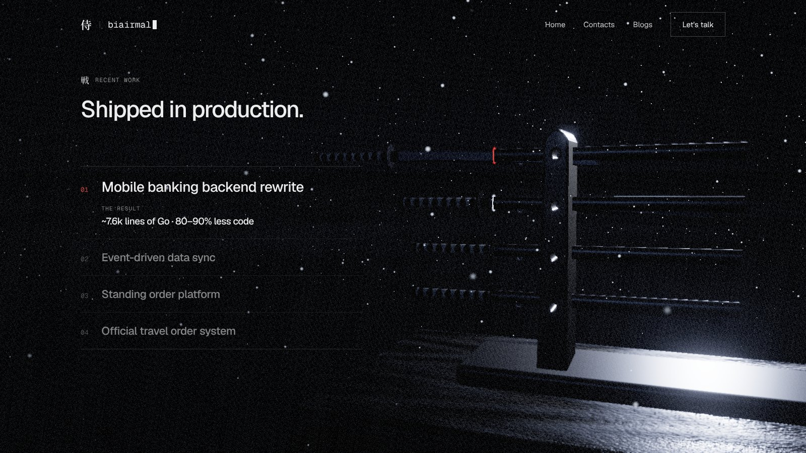
Four projects, four swords on a lacquered rack (katanakake). The list stays as real HTML <details> on the left. The rack on the right mirrors it: each row's sword sits on the same line as its title.
Hover a row and its sword slides a few centimetres out, with a glint along the edge. Open a row and the sword draws halfway, the scabbard ring turns blood-red, and the camera eases in. The result numbers count up.
This is the reading section, so the light is low and the camera barely moves. Nothing animates while the user is reading text.
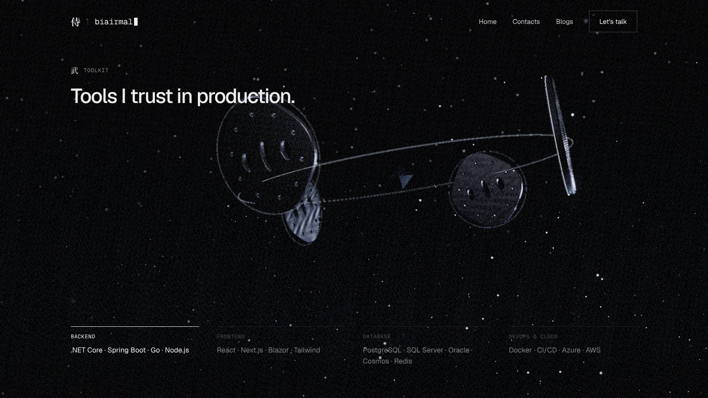
Four iron sword guards (tsuba), one per group (Backend, Frontend, Database, DevOps), orbit a small steel core on a ring of light. Each is pierced in a different pattern, like a maker's mark.
Scroll turns the ring and orbits the camera. The tsuba nearest the camera lights its seam ring, and its group in the HTML grid below comes to full opacity. Hovering a group in the grid turns its tsuba to the front.
Up close, each tsuba carries its tool names engraved in small mono type around the rim, as a decal. You can read them on large screens, and they are decorative everywhere else.
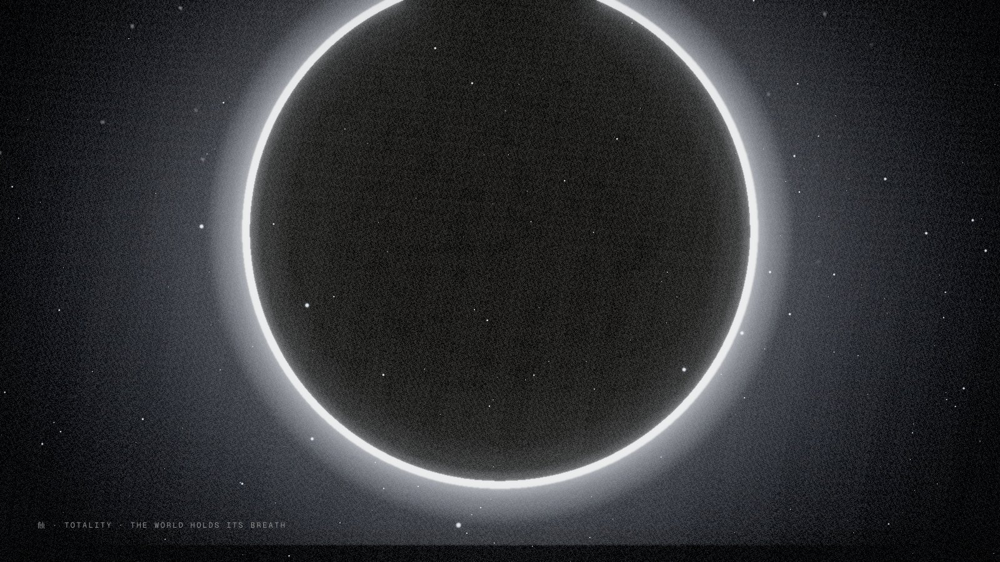
08A · Totality
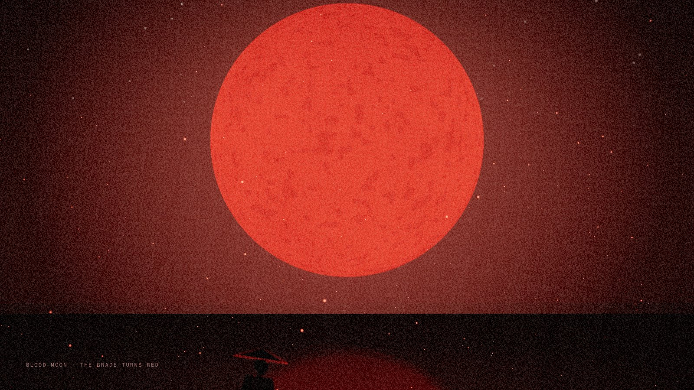
08B · Blood moon
The camera tilts up and the long lens flattens the moon until it fills the frame. The crescent closes to a new moon with a thin corona ring: totality. At this moment the page goes silent for a beat, with no wind.
The shadow passes off and leaves a full blood moon. The scene's grade shifts red: key light, fog, water and every seam (blade, kasa, koiguchi). UI accents follow the same shift. It should feel like the night has turned, not like a theme toggle.
As the camera tilts down we are back at the stone slab from shot 01. The film closes where it started, under a different moon.
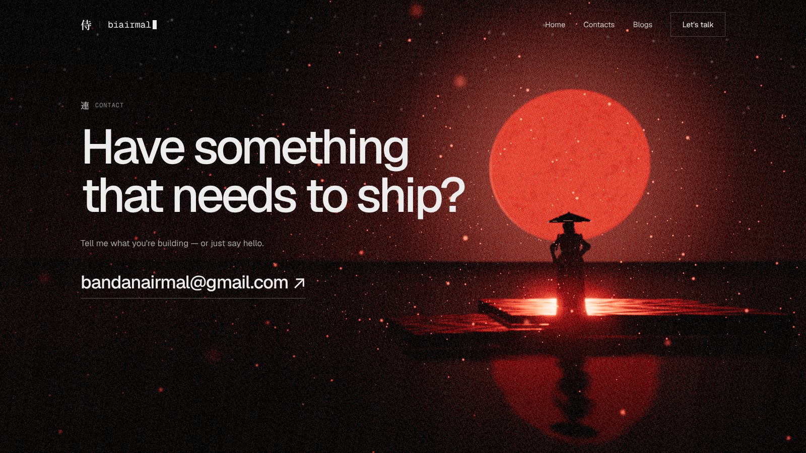
The same slab as shot 01, now under a blood moon, with red mist on the water and red dust in the air. For the first time he has turned to face us. The headline gets the left two-thirds and he stands in the moon.
Hovering the email makes his hand move to the hilt (anticipation). Clicking plays a red slash across the address, then opens the mail app. You came in on a draw, and you leave on the promise of one.
When the footer appears he bows (rei) once. "Back to top" plays the camera path in reverse at 4× speed: the moon returns to white and he is back in his stance.
色Look
| Element | Treatment |
|---|---|
| Key light | The moon is the only real light. It is always behind the subject, so silhouettes and rim light do the work. The fill is a faint cool bounce from the water. |
| Water | A real mirror broken up by two layers of ripple normals and slow rings spreading from his feet. The reflection blurs and fades with distance, the way real water does, and doubles the moon and the figure in every wide shot. |
| Atmosphere | Ten layers of noise mist lying on the water. Dust motes that brighten when they're backlit by the moon (forward scattering), with near ones going soft and out of focus. Light shafts from the moon are cast only where his silhouette breaks the disc. |
| Post | Depth of field on every shot, soft bloom (seams, moon, lanterns), a light vignette, constant fine film grain and ACES tone mapping. Chromatic aberration only during the cut. |
| Type and UI | Unchanged from today: Geist and Geist Mono. Kanji appear only as the small section labels (人 道 戦 武 連), never in the 3D scene. The UI sits on the left over the darkest part of each frame, and every shot puts the subject on the right. |
| Light mode | To be decided. The proposal is a pale dawn: a mist-white sky, an ink-black silhouette and a grey moon. It is the same world with a different lighting preset, not a separate design. |
型Build notes
| Layer | Plan |
|---|---|
| 3D | three.js through React Three Fiber and drei, inside the current Next.js 16 app. Static export to GitHub Pages still works. |
| Camera | One master GSAP ScrollTrigger timeline over Lenis, which the site already uses. Each shot is a labelled range with its camera position, target, lens and roll. Character clips are scrubbed by the same timeline. |
| Character | A rigged glTF with the eight clips above, played through an AnimationMixer and scrubbed by scroll where marked. Seams are an emissive material on thin mesh strips, part of the model. In the previz, the body is three.js's Xbot mannequin with armour built in code (design/previz/samurai.js), as a stand-in for the commissioned model. |
| Realism | The biggest step up from these frames is the sculpted model with baked textures. After that: soft shadows, contact shadows, real-time reflections, mist, dust and light shafts, which are all in the previz already, and on mobile a cheaper tier with lower-resolution reflections and no depth of field. |
| Performance | Sets stream in by distance. Three quality tiers: full, no reflections or bloom, and a static key-frame fallback. Three.js loads after the HTML paints. The scene pauses when the tab is hidden. |
| Accessibility | All content stays as real HTML. With prefers-reduced-motion: no pinning, no camera flights, and each section shows its key frame as a still that cross-fades in. |
問Decisions for you
侍 · biairmal v4 storyboard · draft 03 · real-time previz renders: Xbot mannequin (three.js examples) with procedural armour · design/previz · earlier drafts: draft-01.html, draft-02.html